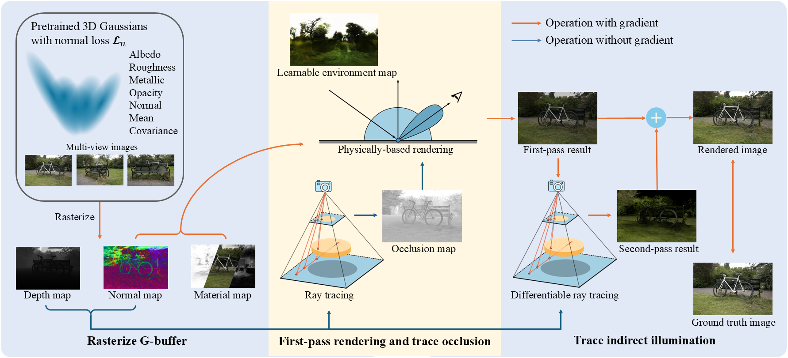

<!DOCTYPE html>
<html>
<head>
  <meta charset="utf-8">
  <meta name="description"
        content="GI-GS estimate the geometry, material and lighting of the scene from multi-view images.">
  <meta name="keywords" content="Gaussian Splatting, Inverse Rendering">
  <meta name="viewport" content="width=device-width, initial-scale=1">
  <title>GI-GS: Global Illumination Decomposition on Gaussian Splatting for Inverse Rendering</title>

  <link href="https://fonts.googleapis.com/css?family=Google+Sans|Noto+Sans|Castoro"
        rel="stylesheet">

  <link rel="stylesheet" href="./static/css/bulma.min.css">
  <link rel="stylesheet" href="./static/css/bulma-carousel.min.css">
  <link rel="stylesheet" href="./static/css/bulma-slider.min.css">
  <link rel="stylesheet" href="./static/css/fontawesome.all.min.css">
  <link rel="stylesheet"
        href="https://cdn.jsdelivr.net/gh/jpswalsh/academicons@1/css/academicons.min.css">
  <link rel="stylesheet" href="./static/css/index.css">
  <link rel="icon" href="./static/images/favicon.svg">

  <script src="https://ajax.googleapis.com/ajax/libs/jquery/3.5.1/jquery.min.js"></script>
  <script defer src="./static/js/fontawesome.all.min.js"></script>
  <script src="./static/js/bulma-carousel.min.js"></script>
  <script src="./static/js/bulma-slider.min.js"></script>
  <script src="./static/js/index.js"></script>
</head>
<body>

<nav class="navbar" role="navigation" aria-label="main navigation">
  <div class="navbar-brand">
    <a role="button" class="navbar-burger" aria-label="menu" aria-expanded="false">
      <span aria-hidden="true"></span>
      <span aria-hidden="true"></span>
      <span aria-hidden="true"></span>
    </a>
  </div>
</nav>


<section class="hero">
  <div class="hero-body">
    <div class="container is-max-desktop">
      <div class="columns is-centered">
        <div class="column has-text-centered">
          <h1 class="title is-1 publication-title">GI-GS: Global Illumination Decomposition on Gaussian Splatting for Inverse Rendering</h1>
        </div>
      </div>
    </div>
  </div>
</section>

<section class="hero teaser">
  <div class="container is-max-desktop">
    <div class="hero-body">
      <video id="teaser" autoplay muted loop playsinline height="100%">
        <source src="./static/videos/stump.mp4"
                type="video/mp4">
      </video>
      <h2 class="sub has-text-centered">
        <span class="GI-GS">GI-GS</span> reconstruct the geometry, material and lighting of the scene.
      </h2>
    </div>
  </div>
</section>


<section class="hero is-light is-small">
  <div class="hero-body">
    <div class="container">
      <div id="results-carousel" class="carousel results-carousel">
        <div class="item item-lego">
          <video poster="" id="hotdog" autoplay controls muted loop playsinline height="100%">
            <source src="./static/videos/render_lego.mp4"
                    type="video/mp4">
          </video>
        </div>
        <div class="item item-hotdog">
          <video poster="" id="hotdog" autoplay controls muted loop playsinline height="100%">
            <source src="./static/videos/render_hotdog.mp4"
                    type="video/mp4">
          </video>
        </div>
        <div class="item item-armadillo">
          <video poster="" id="armadillo" autoplay controls muted loop playsinline height="100%">
            <source src="./static/videos/render_armadillo.mp4"
                    type="video/mp4">
          </video>
        </div>
        <div class="item item-normal_lego">
          <video poster="" id="normal_lego" autoplay controls muted loop playsinline height="100%">
            <source src="./static/videos/normal_lego.mp4"
                    type="video/mp4">
          </video>
        </div>
        <div class="item item-normal_hotdog">
          <video poster="" id="normal_hotdog" autoplay controls muted loop playsinline height="100%">
            <source src="./static/videos/normal_hotdog.mp4"
                    type="video/mp4">
          </video>
        </div>
        <div class="item item-normal_ficus">
          <video poster="" id="normal_ficus" autoplay controls muted loop playsinline height="100%">
            <source src="./static/videos/normal_ficus.mp4"
                    type="video/mp4">
          </video>
        </div>
        <div class="item item-roughness_ficus">
          <video poster="" id="roughness_ficus" autoplay controls muted loop playsinline height="100%">
            <source src="./static/videos/roughness_ficus.mp4"
                    type="video/mp4">
          </video>
        </div>
        <div class="item item-roughness_hotdog">
          <video poster="" id="roughness_hotdog" autoplay controls muted loop playsinline height="100%">
            <source src="./static/videos/roughness_hotdog.mp4"
                    type="video/mp4">
          </video>
        </div>
      </div>
    </div>
  </div>
</section>


<section class="section">
  <div class="container is-max-desktop">
    <!-- Abstract. -->
    <div class="columns is-centered has-text-centered">
      <div class="column is-four-fifths">
        <h2 class="title is-3">Abstract</h2>
        <div class="content has-text-justified">
          <p>
            We present GI-GS, a novel inverse rendering framework that leverages 3D Gaussian Splatting (3DGS) and deferred shading to achieve photo-realistic novel view
            synthesis and relighting. In inverse rendering, accurately modeling the shading
            processes of objects is essential for achieving high-fidelity results. Therefore, it
            is critical to incorporate global illumination to account for indirect lighting that
            reaches an object after multiple bounces across the scene. Previous 3DGS-based
            methods have attempted to model indirect lighting by characterizing indirect illumination as learnable lighting volumes or additional attributes of each Gaussian,
            while using baked occlusion to represent shadow effects. These methods, however, fail to accurately model the complex physical interactions between light and
            objects, making it impossible to construct realistic indirect illumination during relighting. To address this limitation, we propose to calculate indirect lighting using
            efficient path tracing with deferred shading. In our framework, we first render
            a G-buffer to capture the detailed geometry and material properties of the scene.
            Then, we perform physically-based rendering (PBR) only for direct lighting. With
            the G-buffer and previous rendering results, the indirect lighting can be calculated through a lightweight path tracing. Our method effectively models indirect
            lighting under any given lighting conditions, thereby achieving better novel view
            synthesis and relighting. Quantitative and qualitative results show that our GI-GS
            outperforms existing baselines in both rendering quality and efficiency.
          </p>
        </div>
      </div>
    </div>
    <!--/ Abstract. -->

    <!-- Paper video. -->
    <div class="columns is-centered has-text-centered">
      <div class="column is-four-fifths">
        <h2 class="title is-3">Pipeline</h2>
        <div class="pipeline">
         
        </div>
      </div>
    </div>
    <!--/ Paper video. -->
  </div>
</section>

<footer class="footer">
  <div class="container">
    <div class="columns is-centered">
      <div class="column is-8">
        <div class="content">
          <p>
            This website is licensed under a <a rel="license"
                                                href="http://creativecommons.org/licenses/by-sa/4.0/">Creative
            Commons Attribution-ShareAlike 4.0 International License</a>.
          </p>
        </div>
      </div>
    </div>
  </div>
</footer>

</body>
</html>
